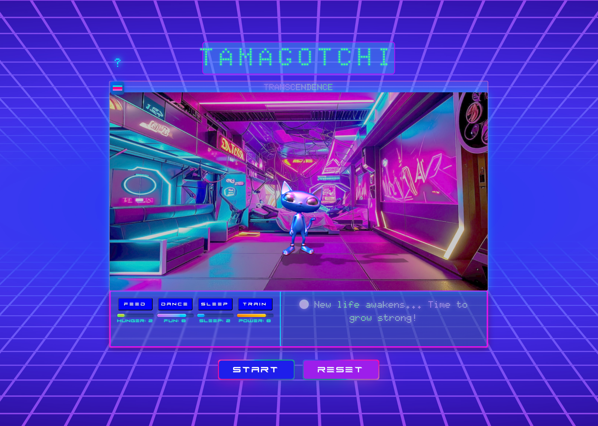
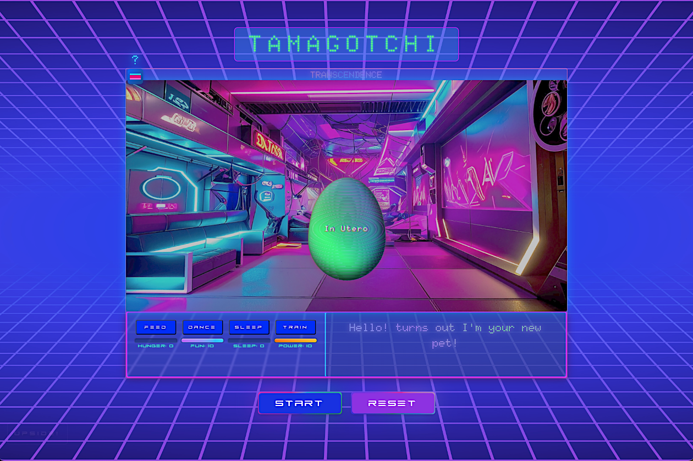
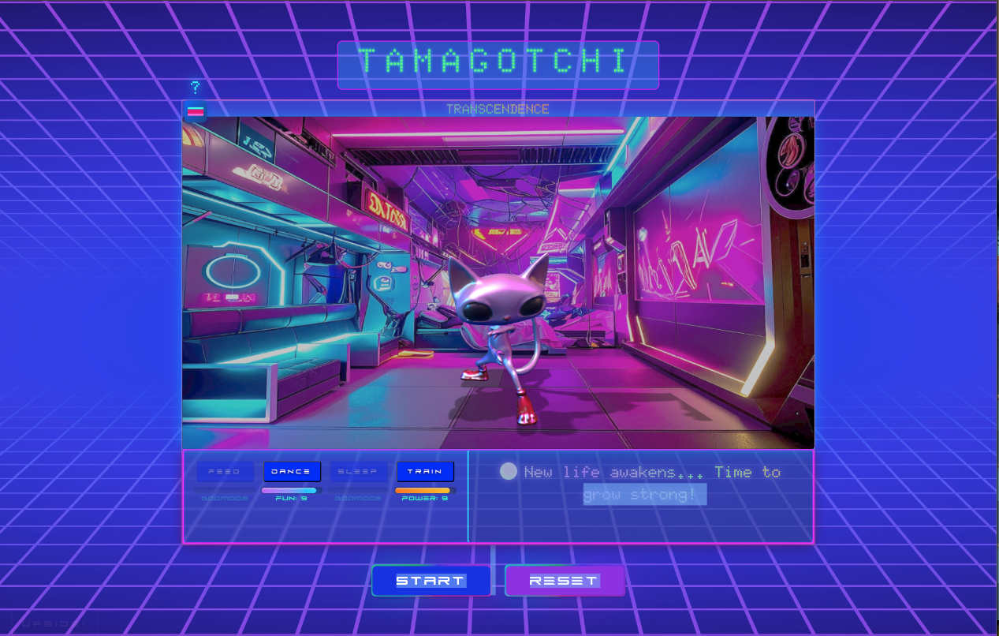
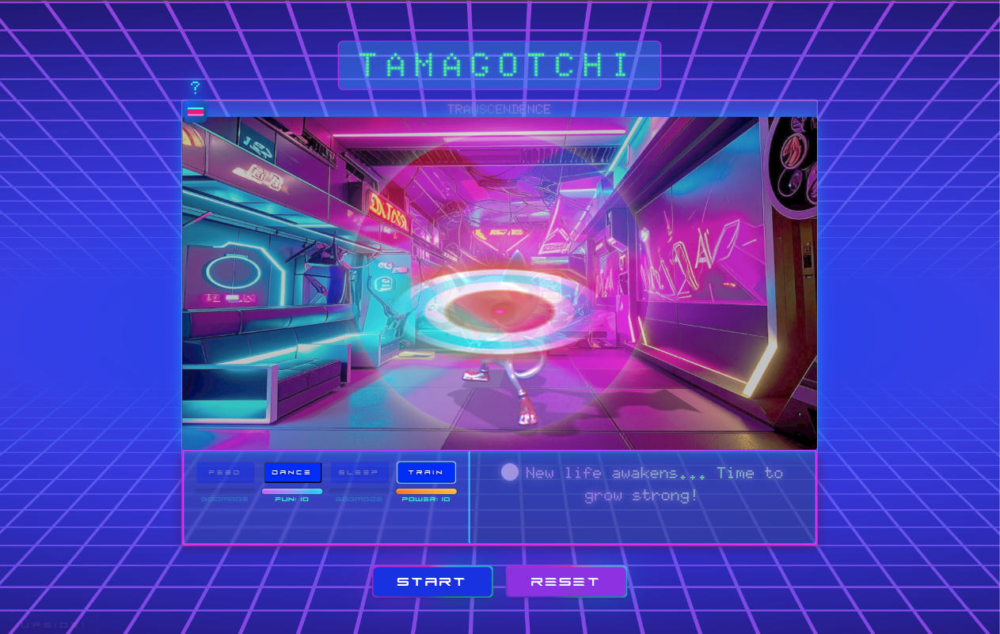
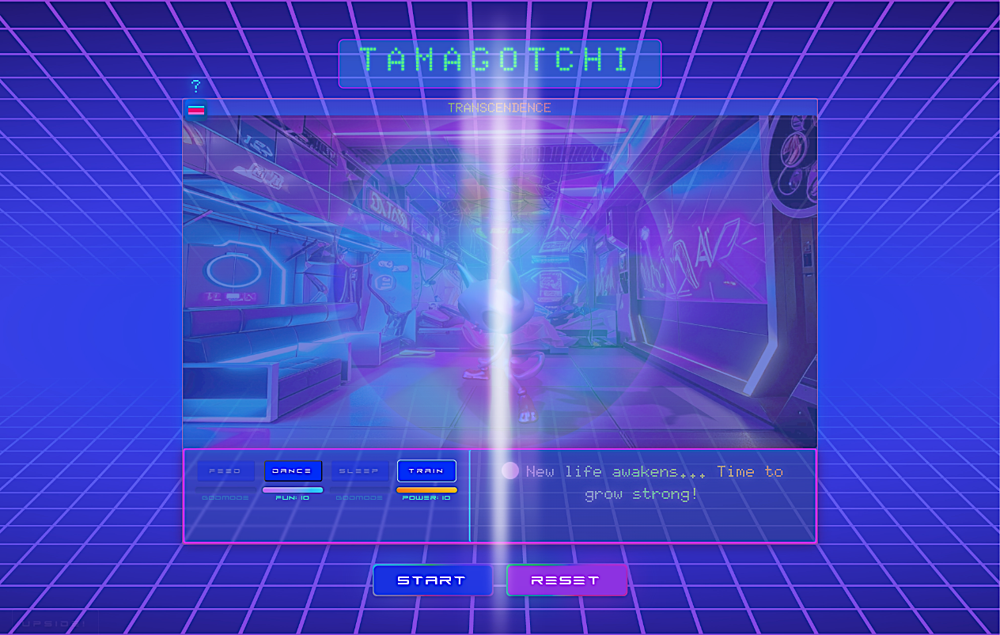
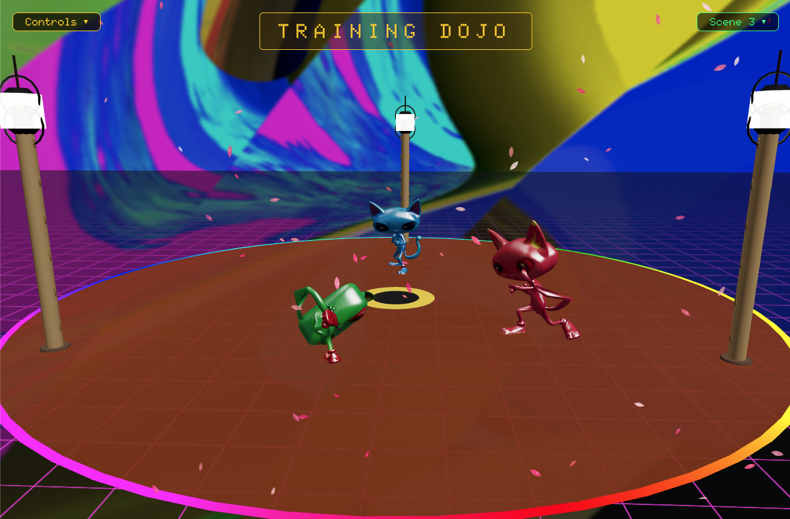
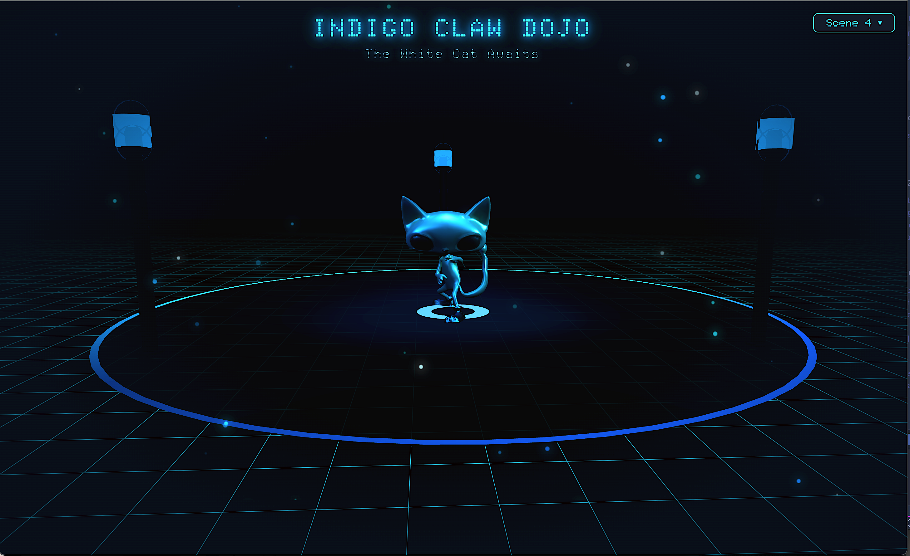
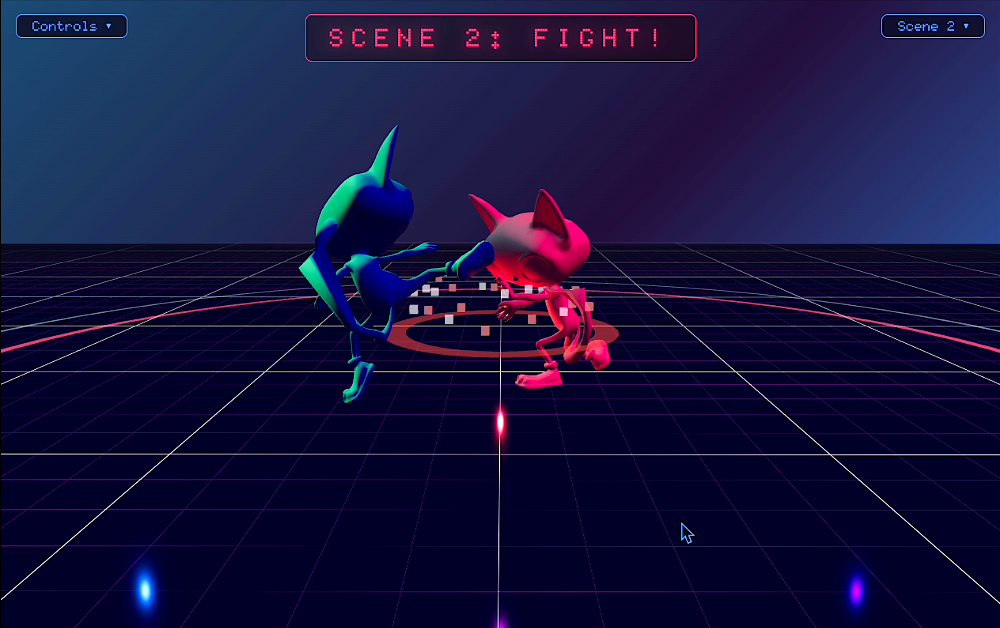
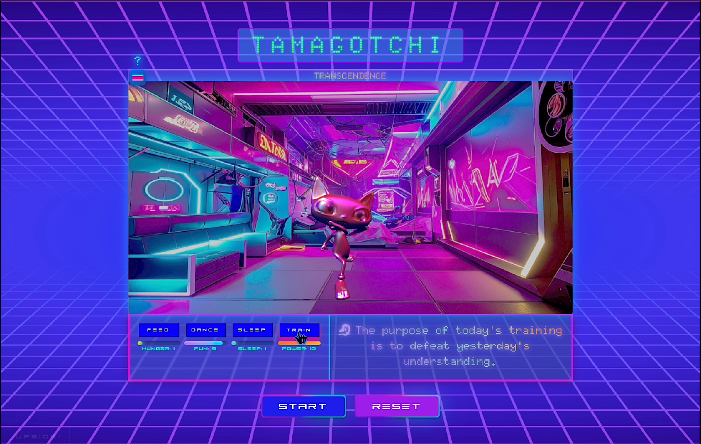

TAMAGOTCHI TRANSCENDENCE
An evolution simulator where digital creatures grow through color and consciousness









About the Project
Tamagotchi Transcendence is an evolution simulator where a digital creature progresses through stages of color and consciousness, ultimately reaching a state of transcendence. This project represents a complete reimagining of my earlier transcendence-pet-sim, rebuilt from the ground up with a full 3D pipeline and expanded gameplay systems.
Technical Implementation
I modeled, rigged, and animated the creature in Blender, creating 32 unique animations that flow through Three.js via FBX. The game features incremental size scaling with each evolution and a complete audio pass including contextual music switching and training sound effects.
Core Mechanics
Players maintain their pet through four care actions: feeding, dancing, sleeping, and training. Each evolution cycle requires completing all care actions while managing stat decay. The creature evolves through five color stages—blue, yellow, green, red, and translucent white—each representing a different phase of development. The final white stage shifts to meditation-focused care, using a qi-gong idle animation to reflect the transcendent state.
The Evolution Arc
Starting from a glitched egg, the creature grows in both size and presence through each stage. Neglect leads to deletion from the simulation. Balanced care guides it toward the translucent white form, where training becomes the singular required action and the creature exists in a state of near-transparency.
Easter Egg: Battle Arena
A hidden button reveals a React Three Fiber experience featuring four distinct scenes: a dance battle with chrome cats under neon spotlights, a cyberpunk fighting arena, a Japanese training dojo with animated cherry blossoms and lantern-lit bamboo poles, and the Indigo Claw Dojo with its darker, meditative atmosphere.
This project synthesizes my backgrounds in visual art, martial arts philosophy, and software development into a meditation on growth, discipline, and letting go.
Tech Stack
My Role
Solo developer — 3D modeling, rigging, animation (32 unique animations), game logic, audio design, and frontend implementation.
Project Type
Personal Project / Game Development
Key Features
Five Evolution Stages
Progress through blue, yellow, green, red, and transcendent white forms. Each stage increases size and unlocks new behaviors.
32 Custom Animations
Hand-crafted in Blender covering all care actions, evolutions, idle states, and the final qi-gong meditation loop.
Care System
Feed, dance, sleep, and train your creature. Stat decay creates urgency—neglect leads to deletion from the simulation.
Transcendent Final Form
The white stage shifts to meditation-only care with qi-gong idle animation and near-transparent existence.
Contextual Audio
Dynamic music switching based on game state with training sound effects and ambient atmosphere.
Open Source
Full codebase available on GitHub — explore the Three.js/R3F integration and Blender workflow.
The Evolution Arc
┌─────────────────────────────────────────────────────────────────┐
│ EVOLUTION STAGES │
├─────────────────────────────────────────────────────────────────┤
│ │
│ 🥚 GLITCHED EGG │
│ │ │
│ ▼ │
│ 🔵 BLUE ──────► 🟡 YELLOW ──────► 🟢 GREEN │
│ │ │
│ ▼ │
│ 🔴 RED ◄────────────┘ │
│ │ │
│ ▼ │
│ ⚪ TRANSCENDENT WHITE │
│ (Qi-Gong State) │
│ │
├─────────────────────────────────────────────────────────────────┤
│ CARE ACTIONS: 🍎 Feed │ 💃 Dance │ 😴 Sleep │ 🥋 Train │
│ FINAL STAGE: 🧘 Meditation Only │
└─────────────────────────────────────────────────────────────────┘
Starting from a glitched egg, the creature grows through each color stage. Neglect leads to deletion; balanced care leads to transcendence.
Easter Egg: Battle Arena
Dance Battle
Chrome cats under neon spotlights in a dance-off showdown.
Cyberpunk Arena
Fighting arena with neon-lit cyberpunk atmosphere.
Japanese Dojo
Animated cherry blossoms and lantern-lit bamboo poles.
Indigo Claw Dojo
Darker, meditative atmosphere for focused training.
Design System
Evolution Colors
Stage 1
Stage 2
Stage 3
Stage 4
Visual Effects
- Incremental size scaling per evolution
- Translucent white final form
- Glitched egg spawn animation
- Qi-gong meditation idle loop